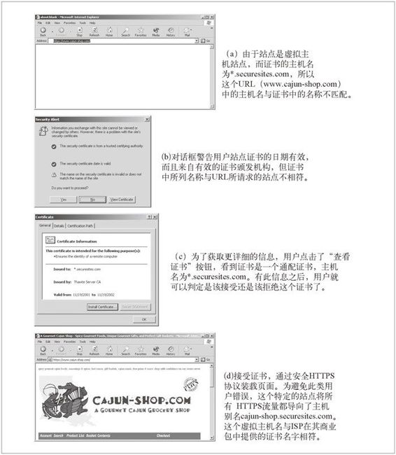

14.8 HTTPS 客户端实例
SSL 是个复杂的二进制协议。除非你是密码专家，否则就不应该直接发送原始的 SSL 流量。幸运的是，借助一些商业或开源的库，编写 SSL 客户端和服务器并不十分困难。

图 14-18 证书名不匹配引发的证书错误对话框
14.8.1 OpenSSL
OpenSSL 是 SSL 和 TLS 最常见的开源实现。OpenSSL 项目由一些志愿者合作开发，目标是开发一个强壮的、具有完备功能的商业级工具集，以实现 SSL 和 TLS 协议以及一个全功能的通用加密库。可以从 http://www.openssl.org 上获得 OpenSSL 的相关信息，并下载相应软件。
你可能还听说过 SSLeay（读作 S-S-L-e-a-y）。OpenSSL 是 SSLeay 库的后继者，接口非常相似。SSLeay 最初是由 Eric A. Young（就是 SSLeay 中的“eay”）开发的。
14.8.2 简单的HTTPS客户端
本节我们将用 OpenSSL 包来编写一个非常初级的 HTTPS 客户端。这个客户端与服务器建立一条 SSL 连接，打印一些来自站点服务器的标识信息，通过安全信道发送 HTTP GET 请求，接收 HTTP 响应，并将响应打印出来。
下面显示的 C 程序是普通 HTTPS 客户端的 OpenSSL 实现。为了保持其简洁性，程序中没有包含差错处理和证书处理逻辑。
这个示例程序中删除了差错处理功能，所以只能将其用于示例。在一般的有差错存在的环境中，软件会崩溃或者无法正常运行。
/**********************************************************************
* https_client.c --- very simple HTTPS client with no error checking
* usage: https_client servername
**********************************************************************/
#include <stdio.h>
#include <memory.h>
#include <errno.h>
#include <sys/types.h>
#include <sys/socket.h>
#include <netinet/in.h>
#include <arpa/inet.h>
#include <netdb.h>
#include <openssl/crypto.h>
#include <openssl/x509.h>
#include <openssl/pem.h>
#include <openssl/ssl.h>
#include <openssl/err.h>
void main(int argc, char **argv)
{
SSL *ssl;
SSL_CTX *ctx;
SSL_METHOD *client_method;
X509 *server_cert;
int sd,err;
char *str,*hostname,outbuf[4096],inbuf[4096],host_header[512];
struct hostent *host_entry;
struct sockaddr_in server_socket_address;
struct in_addr ip;
/*========================================*/
/* (1) initialize SSL library */
/*========================================*/
SSLeay_add_ssl_algorithms( );
client_method = SSLv2_client_method( );
SSL_load_error_strings( );
ctx = SSL_CTX_new(client_method);
printf("(1) SSL context initialized\n\n");
/*=============================================*/
/* (2) convert server hostname into IP address */
/*=============================================*/
hostname = argv[1];
host_entry = gethostbyname(hostname);
bcopy(host_entry->h_addr, &(ip.s_addr), host_entry->h_length);
printf("(2) '%s' has IP address '%s'\n\n", hostname, inet_ntoa(ip));
/*=================================================*/
/* (3) open a TCP connection to port 443 on server */
/*=================================================*/
sd = socket (AF_INET, SOCK_STREAM, 0);
memset(&server_socket_address, '\0', sizeof(server_socket_address));
server_socket_address.sin_family = AF_INET;
server_socket_address.sin_port = htons(443);
memcpy(&(server_socket_address.sin_addr.s_addr),
host_entry->h_addr, host_entry->h_length);
err = connect(sd, (struct sockaddr*) &server_socket_address,
sizeof(server_socket_address));
if (err < 0) { perror("can't connect to server port"); exit(1); }
printf("(3) TCP connection open to host '%s', port %d\n\n",
hostname, server_socket_address.sin_port);
/*========================================================*/
/* (4) initiate the SSL handshake over the TCP connection */
/*========================================================*/
ssl = SSL_new(ctx); /* create SSL stack endpoint */
SSL_set_fd(ssl, sd); /* attach SSL stack to socket */
err = SSL_connect(ssl); /* initiate SSL handshake */
printf("(4) SSL endpoint created & handshake completed\n\n");
/*============================================*/
/* (5) print out the negotiated cipher chosen */
/*============================================*/
printf("(5) SSL connected with cipher: %s\n\n", SSL_get_cipher(ssl));
/*========================================*/
/* (6) print out the server's certificate */
/*========================================*/
server_cert = SSL_get_peer_certificate(ssl);
printf("(6) server's certificate was received:\n\n");
str = X509_NAME_oneline(X509_get_subject_name(server_cert), 0, 0);
printf(" subject: %s\n", str);
str = X509_NAME_oneline(X509_get_issuer_name(server_cert), 0, 0);
printf(" issuer: %s\n\n", str);
/* certificate verification would happen here */
X509_free(server_cert);
/*********************************************************/
/* (7) handshake complete --- send HTTP request over SSL */
/*********************************************************/
sprintf(host_header,"Host: %s:443\r\n",hostname);
strcpy(outbuf,"GET / HTTP/1.0\r\n");
strcat(outbuf,host_header);
strcat(outbuf,"Connection: close\r\n");
strcat(outbuf,"\r\n");
err = SSL_write(ssl, outbuf, strlen(outbuf));
shutdown (sd, 1); /* send EOF to server */
printf("(7) sent HTTP request over encrypted channel:\n\n%s\n",outbuf);
/**************************************************/
/* (8) read back HTTP response from the SSL stack */
/**************************************************/
err = SSL_read(ssl, inbuf, sizeof(inbuf) - 1);
inbuf[err] = '\0';
printf ("(8) got back %d bytes of HTTP response:\n\n%s\n",err,inbuf);
/************************************************/
/* (9) all done, so close connection & clean up */
/************************************************/
SSL_shutdown(ssl);
close (sd);
SSL_free (ssl);
SSL_CTX_free (ctx);
printf("(9) all done, cleaned up and closed connection\n\n");
}
这个例子是在 Sun Solaris 上面编译运行的，但它说明了 SSL 在很多 OS 平台上的工作原理。由于 OpenSSL 提供了一些强有力的特性，包括所有加密、密钥以及证书管理在内的整个程序都可以在一个几页左右的 C 程序中实现。
下面按部分分析下这个程序。
程序的顶端包含了一些用于支持 TCP 联网和 SSL 的支撑文件。
第 1 部分通过调用 SSL_CTX_new 创建了本地上下文，以记录握手参数及与 SSL 连接有关的其他状态。
第 2 部分通过 Unix 的 gethostbyname 函数将（由一个命令行变元提供的）输入主机名转换成了 IP 地址。其他平台可能会通过其他方式来提供这项功能。
第 3 部分通过创建本地套接字、设置远端地址信息并连接到远端服务器，建立了一条到服务器端口 443 的 TCP 连接。
一旦 TCP 连接建立起来，就用 SSL_new 和 SSL_set_fd 将 SSL 层附加到 TCP 连接之上，并调用 SSL_connect 与服务器进行 SSL 握手。第 4 部分完成时，我们就建立了一个已选好密码且交换过证书的可运行的 SSL 信道。
第 5 部分打印了选中的批量加密密码值。
第 6 部分打印了服务器回送的 X.509 证书中包含的部分信息，其中包括与证书持有者和颁发证书的组织有关的信息。OpenSSL 库没有对服务器证书中的信息作任何特殊的处理。实际的 SSL 应用程序，比如 Web 浏览器会对证书进行一些完整性检查，以确保证书是正确签发的，且是来自正确主机的。我们在 14.7.6 节讨论了浏览器对服务器证书所做的处理。
此时，我们的 SSL 连接就已经可以用于安全数据的传输了。在第 7 部分中，用 SSL_write 在 SSL 信道上发送了简单的 HTTP 请求 GET / HTTP/1.0，然后关闭了连接的输出端。
在第 8 部分中，用 SSL_read 从连接上读回响应，并将其打印到屏幕上。SSL 层负责所有的加密和解密工作，因此可以直接读写普通的 HTTP 命令。
最后，在第 9 部分进行了一些清理工作。
更多与 OpenSSL 库有关的信息请参见 http://www.openssl.org。
14.8.3 执行OpenSSL客户端
下面显示了指向安全服务器时这个简单 HTTP 客户端的输出。在这个例子中，客户端指向了摩根士丹利的在线证券主页。在线交易公司都在广泛使用 HTTPS。
% https_client clients1.online.msdw.com
(1) SSL context initialized
(2) 'clients1.online.msdw.com' has IP address'63.151.15.11'
(3) TCP connection open to host 'clients1.online.msdw.com', port 443
(4) SSL endpoint created & handshake completed
(5) SSL connected with cipher: DES-CBC3-MD5
(6) server's certificate was received:
subject: /C=US/ST=Utah/L=Salt Lake City/O=Morgan Stanley/OU=Online/CN=
clients1.online.msdw.com
issuer: /C=US/O=RSA Data Security, Inc./OU=Secure Server Certification
Authority
(7) sent HTTP request over encrypted channel:
GET / HTTP/1.0
Host: clients1.online.msdw.com:443
Connection: close
(8) got back 615 bytes of HTTP response:
HTTP/1.1 302 Found
Date: Sat, 09 Mar 2002 09:43:42 GMT
Server: Stronghold/3.0 Apache/1.3.14 RedHat/3013c (Unix) mod_ssl/2.7.1 OpenSSL/0.9.6
Location: https://clients.online.msdw.com/cgi-bin/ICenter/home
Connection: close
Content-Type: text/html; charset=iso-8859-1
<!DOCTYPE HTML PUBLIC "-//IETF//DTD HTML 2.0//EN">
<HTML><HEAD>
<TITLE>302 Found</TITLE>
</HEAD><BODY>
<H1>Found</H1>
The document has moved <A HREF="https://clients.online.msdw.com/cgi-bin/ICenter/
home">here</A>.<P>
<HR>
<ADDRESS>Stronghold/3.0Apache/1.3.14 RedHat/3013c Server at clients1.online.msdw.com
Port 443</ADDRESS>
</BODY></HTML>
(9) all done, cleaned up and closed connection
只要完成了前面 4 个部分，客户端就有了一条打开的 SSL 连接。这样它就可以查询连接的状态，选择参数，检查服务器证书了。
在这个例子中，客户端和服务器对 DES-CBC3-MD5 批量加密密码进行了沟通。你还能看到服务器站点证书属于美国犹他州盐湖城的摩根士丹利组织。证书由 RSA 数据安全组织授予，主机名为 clients1.online.msdw.com，与请求相符。
只要建立起了 SSL 信道，并且客户端对站点的证书没有异议，就可以通过安全信道来发送其 HTTP 请求了。在我们这个例子中，客户端发送了一条简单的“GET / HTTP/1.0”HTTP 请求，并收到了 302 Redirect 响应，请求用户去获取另一个 URL。